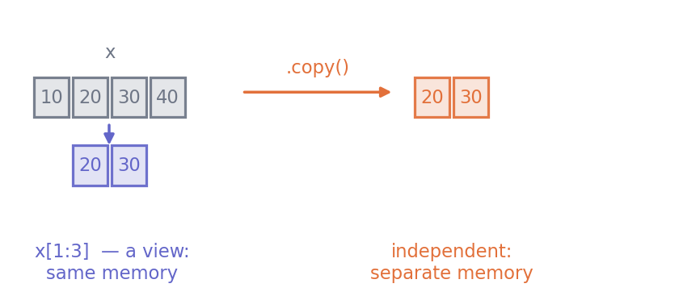

import numpy as np
scores = np.array([68.4, 55.1, 72.0, 61.3])
print(scores)
print("shape", scores.shape, " ndim", scores.ndim, " dtype", scores.dtype)[68.4 55.1 72. 61.3]
shape (4,) ndim 1 dtype float64Python · Unit 6
Why this unit is here
A Python list can hold anything, in any mix, and grow at either end. That flexibility costs speed and, more importantly here, costs meaning — a list gives you no way to say “these 240 numbers are one variable”.
A NumPy array trades the flexibility away. Every element has the same type, the shape is fixed, and the whole thing sits in one block of memory. In exchange you get arithmetic on entire columns at once, and a vocabulary — shape, axis, dtype — that the rest of data science is written in.
You should be able to:
Quick check. What does [10, 20, 30][1:3] give?
[20, 30]. Start at index 1, stop before index 3. Array slicing uses exactly the same convention, so this transfers directly.
import numpy as np
scores = np.array([68.4, 55.1, 72.0, 61.3])
print(scores)
print("shape", scores.shape, " ndim", scores.ndim, " dtype", scores.dtype)[68.4 55.1 72. 61.3]
shape (4,) ndim 1 dtype float64Three attributes describe every array, and you should be able to state all three before doing arithmetic:
shape — how many elements along each dimension, as a tuple.ndim — how many dimensions. len(shape).dtype — the single type every element has.shape is (4,) with a trailing comma because it is a one-element tuple: four values along one dimension. (4,) and (4, 1) are different things, and P7 is where that difference bites.
The immediate payoff is that arithmetic applies to everything at once:
print(scores + 5)
print(scores > 60)[73.4 60.1 77. 66.3]
[ True False True True]A list will not do either. [1, 2] + 5 raises, and [1, 2] > 1 is meaningless.
print(np.zeros(4))
print(np.ones((2, 3)))
print(np.arange(0, 10, 2))
print(np.linspace(0, 1, 5))[0. 0. 0. 0.]
[[1. 1. 1.]
[1. 1. 1.]]
[0 2 4 6 8]
[0. 0.25 0.5 0.75 1. ]arange(start, stop, step) follows the usual exclusive-stop convention, so it never reaches stop. linspace(start, stop, n) gives exactly n points and does include both ends — a deliberate difference, and the reason linspace is the right choice for plotting a curve.
whole = np.array([1, 2, 3])
print(whole.dtype)
whole[0] = 2.7 # assigning a float into an integer array
print(whole)int64
[2 2 3]The 2.7 was truncated to 2 without a word of warning. dtype is not a display detail — it changes results. If a column will hold fractions, make it float from the start:
decimal = np.array([1, 2, 3], dtype=float)
decimal[0] = 2.7
print(decimal, decimal.dtype)[2.7 2. 3. ] float64Mixing types in the input forces a common dtype, which is rarely what you want:
print(np.array([1, 2.5, 3]).dtype)
print(np.array([1, 2, "3"]).dtype)float64
<U21That second one turned your numbers into text. Inspect the dtype whenever an array comes from somewhere you did not control.
table = np.arange(12).reshape(3, 4)
print(table)
print("shape", table.shape)[[ 0 1 2 3]
[ 4 5 6 7]
[ 8 9 10 11]]
shape (3, 4)Index with [row, column]:
print(table[0, 0]) # first row, first column
print(table[2, -1]) # last row, last column
print(table[1]) # a whole row
print(table[:, 1]) # a whole column0
11
[4 5 6 7]
[1 5 9]table[:, 1] reads as “every row, column 1”. The colon means all of this dimension, and it is how you take a column out of a table.
The single most useful thing in this unit:
scores = np.array([68.4, 42.0, 72.0, 55.1, 187.0])
mask = (scores >= 50) & (scores <= 100)
print(mask)
print(scores[mask])[ True False True True False]
[68.4 72. 55.1]The comparison produces an array of True/False, and indexing with it keeps only the True positions. Two rules:
& and |, not and and or. The word forms ask for one answer about the whole array; the symbols work element by element.scores >= 50 & scores <= 100 binds in the wrong order and fails confusingly.Counting is then free, because True sums as 1:
print(f"{mask.sum()} of {mask.size} usable")3 of 5 usableThis is the concept that catches people, and it is worth slowing down for.

.copy(), produce independent data.
x = np.array([10, 20, 30, 40])
window = x[1:3] # a view
window[0] = 99
print("x ", x)
print("window", window)x [10 99 30 40]
window [99 30]Changing the view changed x. Nothing was copied — window is a second way of looking at the same block of memory. That is deliberate: slicing a large array would be expensive if it duplicated the data.
When you want independence, say so:
x = np.array([10, 20, 30, 40])
window = x[1:3].copy()
window[0] = 99
print("x ", x)
print("window", window)x [10 20 30 40]
window [99 30]You can always ask:
Basic slicing gives a view; boolean and fancy indexing give a copy. When in doubt, np.shares_memory answers it in one line.
Loading the cohort’s numeric columns and finding the usable rows.
import numpy as np
raw = np.genfromtxt("../data/cohort.csv", delimiter=",", skip_header=1,
usecols=(2, 3, 4)) # diagnostic, hours, final
print("shape", raw.shape, " dtype", raw.dtype)
print(raw[:3])shape (240, 3) dtype float64
[[89.1 12.9 83.6]
[42.4 22.8 56.6]
[68.4 1.7 58.5]]genfromtxt turned anything unparseable into nan — “not a number”, the float value meaning this is missing. It is there in the data:
missing = np.isnan(raw).any(axis=1)
print(f"rows with a missing value: {missing.sum()}")
print("row indices:", np.flatnonzero(missing))rows with a missing value: 1
row indices: [17]Now build the usable mask, one condition at a time so each is visible:
complete = ~np.isnan(raw).any(axis=1)
in_range = (raw[:, 2] >= 0) & (raw[:, 2] <= 100)
usable = complete & in_range
print(f"complete rows : {complete.sum()}")
print(f"score in range: {in_range.sum()}")
print(f"both : {usable.sum()} of {raw.shape[0]}")
data = raw[usable]
print("kept shape", data.shape)complete rows : 239
score in range: 238
both : 238 of 240
kept shape (238, 3)~ negates a boolean array — read it as “not”. And note in_range is computed on the raw array, where a nan compares False against everything, so it already excludes the missing row; combining both conditions explicitly is clearer than relying on that.
Finally, a sanity check on the result rather than a hope:
final = data[:, 2]
print(f"n {final.size}")
print(f"min {final.min():.1f}")
print(f"max {final.max():.1f}")
print(f"mean {final.mean():.2f}")
assert not np.isnan(data).any(), "a missing value survived the filter"
assert (final >= 0).all() and (final <= 100).all(), "an impossible score survived"
print("filters did what they claimed")n 238
min 44.5
max 91.6
mean 65.27
filters did what they claimedTwo assertions, two lines, and the class of error where a filter silently fails to filter is now impossible to miss.
Exercise 1 Predict shape, ndim and dtype for each, then check.
a = np.array([1, 2, 3])
b = np.array([[1.0, 2.0], [3.0, 4.0]])
c = np.zeros((2, 3, 4))a — shape (3,), ndim 1, dtype int64 (may be int32 on Windows).b — shape (2, 2), ndim 2, dtype float64, because the literals are written with decimal points.c — shape (2, 3, 4), ndim 3, dtype float64. zeros gives floats unless told otherwise.The dtype of a is the one worth noting: writing 1 rather than 1.0 gives you an integer array, and assigning 2.7 into it later would silently truncate.
Exercise 2 Why does the first change x and the second not?
x = np.array([1, 2, 3, 4])
x[:2][0] = 99 # first
y = np.array([1, 2, 3, 4])
y[y < 3][0] = 99 # secondx[:2] is basic slicing, so it returns a view into x’s memory. Writing through it writes into x.
y[y < 3] is boolean indexing, which must gather scattered elements, so it returns a copy. The 99 is written into that temporary copy, which is then discarded — y is untouched and no error is raised.
The second is the more dangerous of the two, because it silently does nothing. To assign through a boolean mask, put the mask on the left of the assignment:
y[y < 3] = 99Exercise 3 Write one expression giving the diagnostic scores of rows whose final score is at least 70, from the raw array above. Then say how many there are.
high = raw[(raw[:, 2] >= 70) & ~np.isnan(raw[:, 2]), 0]
print(high.size)Reading it outward: raw[:, 2] is the final-score column; the comparison makes a boolean mask; & ~np.isnan(...) drops the missing row explicitly; and the trailing , 0 selects the diagnostic column from the rows that survived.
Strictly the ~np.isnan is redundant, because nan >= 70 is already False — but relying on that is the kind of cleverness that fails when someone changes the comparison to <. Say what you mean.
Ask whether you are holding a view before writing into anything:
x = np.array([1.0, 2.0, 3.0, 4.0])
piece = x[1:3]
print("shares memory with x:", np.shares_memory(x, piece))shares memory with x: TrueAssert the shape you expect, so a mistake stops the program rather than propagating:
table = np.arange(12).reshape(3, 4)
column = table[:, 1]
assert column.shape == (3,), f"expected (3,), got {column.shape}"
print("column", column, "shape", column.shape)column [1 5 9] shape (3,)Check that a filter filtered. The failure mode is not an error; it is a filter that quietly kept something:
values = np.array([68.4, np.nan, 187.0, 55.1])
kept = values[~np.isnan(values) & (values <= 100)]
print("kept:", kept)
assert not np.isnan(kept).any()
assert (kept <= 100).all()
print(f"{kept.size} of {values.size} kept, and both conditions verified")kept: [68.4 55.1]
2 of 4 kept, and both conditions verifiedWhere this usually goes wrong
y[y < 3][0] = 99 modifies a temporary copy and is silently discarded. Put the mask on the left: y[y < 3] = 99.
piece = x[1:3] then piece[0] = 99 changes x. Use .copy() when you want independence, and np.shares_memory when you are unsure.
and / or on arrays& and |, with each comparison in its own parentheses.
np.array([1, 2, "3"]) produces an array of strings. Check the dtype when the source is not under your control.
nan with ==nan == nan is False, and so is every other comparison. Use np.isnan.
Answers are at the foot of the page.
What is the shape of np.zeros((3, 4))[:, 2]?
(4,) b. (3,) c. (3, 1) d. (1, 3)x = np.array([1,2,3]); y = x[:2]; y[0] = 9. What is x, and why?(a > 1) & (a < 5)?np.array([1, 2, 3])[0] = 2.9 — what does the array hold afterwards?values[values != np.nan] and gets everything back. What went wrong?(b) (3,). Taking one column from a (3, 4) array leaves one value per row, and the column dimension disappears.
[9, 2, 3]. x[:2] is a view into the same memory, so writing through y writes into x.
Because & binds more tightly than > and <. Without parentheses, a > 1 & a < 5 is read as a > (1 & a) < 5, which is not what you meant and usually raises.
[2, 2, 3]. The array is integer dtype, so 2.9 is truncated to 2 — no error, no warning.
nan is not equal to anything, including itself, so values != np.nan is True everywhere and nothing is filtered. Use ~np.isnan(values).